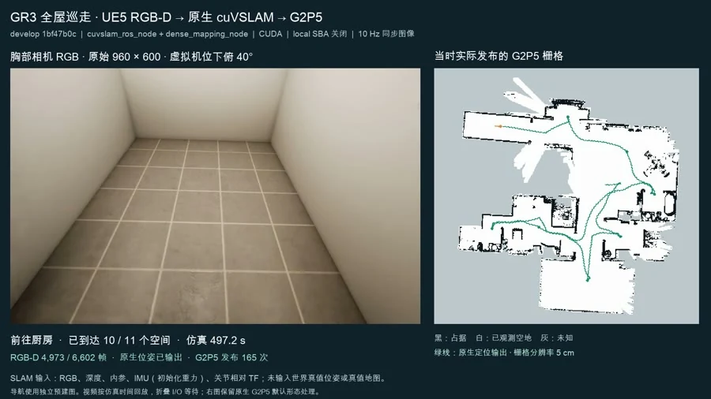

P01
四种户型布局
短门厅入客厅、直入客厅、转折入客厅、尽头大餐厅。原图标注主体 16 × 10 m，并保留房间面积、入口与阳台位置。
图中 Seed 20261013 是布局标识；不作为拍摄或生成日期。与后续建图视频是否使用同一户型，待确认。
56B1B889-0F23-452C-8342-98F06A82C2D7.png

三张原始图片分别保留布局、素材筛选与单件检视信息。点击图片可放大阅读细节。
短门厅入客厅、直入客厅、转折入客厅、尽头大餐厅。原图标注主体 16 × 10 m，并保留房间面积、入口与阳台位置。
图中 Seed 20261013 是布局标识；不作为拍摄或生成日期。与后续建图视频是否使用同一户型，待确认。
56B1B889-0F23-452C-8342-98F06A82C2D7.png
画面展示分类、来源、星级、标签、关联场景与交互性筛选，以及厨房、家具和日用品资产卡片。
截图界面显示 1,865 项、17 个来源场景；仅记录该画面的显示值，未对底层资产或授权状态作核验。
C2406FB8-F4BF-4383-839D-1E2522236100.png
塑料一体椅的模型预览、尺寸、分类和场景关联信息。界面标注最长方向与垂直高度均为 87.98 cm。
界面写有“理论可交互”和“未配置承载区域”；这张图不能证明交互或承载已经完成验证。
C132E63E-0F13-4AA6-83AA-ABFE9AB73CA4.png
先看全屋巡走过程，再看 RGB 与理想深度的同屏对照。字幕和文件名提供的运行信息均保留来源边界。
同屏呈现胸前 RGB 画面、轨迹与 G2P5 栅格随巡走逐步形成的过程。视频标题标注 UE5 RGB-D → 原生 cuVSLAM → G2P5。
离线包可直接播放；单个 HTML 可选择对应本地视频。
末尾画面标注“已到达 11 / 11 个空间”，这是录像中的过程状态；建图精度与实验复现仍需原始运行记录支持。文件名含 4x，按原片时间轴播放。
gr3-whole-apartment-rgbd-g2p5-4x.mp4
按原片标注：全屋巡走 / 4x；具体录制日期未提供。
左侧 RGB、右侧深度，以同屏方式观察室内结构和深度色彩分布。原片标注“理想深度 · 光轴 Z · 固定 0–8 米色标”。
离线包可直接播放；单个 HTML 可选择对应本地视频。
“胸前 RGB · Lianos 真实采集”为原片字幕。当前素材未提供标定文件或误差指标，不能据画面独立判定传感器精度。
depth-rgb-comparison.mp4
按原片标注：同帧 RGB / 理想深度对照；录制日期未提供。
RGB 提供外观与结构线索，深度色图呈现距离分布。画面中门洞、家具与窗边区域的差异可直接对照。
橙子抓取片段与室内行走片段独立展示。当前资料不能确认两者使用同一运行环境或控制策略。
可见机械手接近橙子，将其移动到篮筐内，随后手部撤回。画面底部明确写有“RECORDED STATE REPLAY | VLA 7791”。
离线包可直接播放；单个 HTML 可选择对应本地视频。
原片标注“All 1945 recorded states”。此处展示录制状态回放，不据此推断在线策略闭环、真实机器人实验或抓取成功率。
orange-grasp-restored.mp4
已录制状态的 restored 回放；原始实验日期及控制策略待确认。
室内场景中，人形机器人模型移动并呈现手臂姿态变化，可用于观察动作与场景的视觉关系。
离线包可直接播放；单个 HTML 可选择对应本地视频。
UE5、walk、arms、simtime 来自文件名。控制方式、仿真步长和物理验证条件未随素材提供。
ue5-walk-arms-simtime.mp4
室内行走及手臂动作展示；具体运行日期未提供。
一段 2026 年 10 月 15 日的界面录屏，展示不同信息页面的组织方式。
录屏依次浏览 gr.monitor 的概览、图表、事件、IMU 和命令相关界面。画面可见 standby / STAND TASK STATE 状态。
离线包可直接播放；单个 HTML 可选择对应本地视频。
这些画面用于展示界面与信息组织；实时接入方式、运行稳定性和生产部署情况待确认。另提供 H.264 播放副本，原始 HEVC 文件完整保留。
DingTalk Recording Screen_2026-10-15 115457.mp4
录屏；容器 creation_time：2026-10-15 03:54:57 UTC（与文件名 11:54:57 的时区关系未核实）。
界面中出现的数值与状态作为录屏内容展示。当前素材未附实时系统连通性验证。
原 CSV 含 7 条记录、59 列字段。这里用 F1 展示数据结构，完整原始字段可下载查看。
APT-10 / 2026.10.27 · 保留 CSV 原始行序 · 数值展示至两位小数
| 样例 | Family（原值） | 原状态标签* | A · 实测标签 (%) | B · 演示 (%) | B − A (pp) |
|---|---|---|---|---|---|
case-076 | straight | 退步 | 32.78 | 26.40 | -6.38 |
case-063 | rear_bedrooms_cross | 退步 | 26.92 | 23.15 | -3.77 |
case-024 | short | 混合变化 | 48.36 | 51.84 | +3.48 |
case-006 | short | 改善 | 58.53 | 62.59 | +4.06 |
case-019 | short | 改善 | 41.26 | 47.06 | +5.80 |
case-016 | central_living | 改善 | 35.78 | 43.32 | +7.54 |
case-052 | central_living | 改善 | 41.11 | 49.81 | +8.70 |
* “改善 / 退步 / 混合变化”是 CSV 原状态字段；B 为演示 fixture，这些标签不代表真实系统性能变化。pp 表示百分点。未将筛选记录外推为完整数据集结果。
fourier-eval-filtered.csv
数据集标签：APT-10 / 2026.10.27
原文件内 dataset hash：d995c810a16bdcaf4ff085ed3e1be99855032b9a105cd79731da80cf0a7bb817
该 dataset hash 是原 CSV 注释内容，区别于下方来源清单中对 CSV 文件字节计算的 SHA-256。
仅收录 Documents/pic 的 9 个文件，按内容主题编排。原文件完整保留在离线包内，未改动源目录。
| 素材 / 原文件名 | 规格 / 大小 | 已知时间或阶段 | 追溯信息 |
|---|---|---|---|
| 四种户型布局56B1B889-0F23-452C-8342-98F06A82C2D7.png | 3240 × 23400.40 MB | 图中 Seed 20261013 是布局标识；不作为拍摄或生成日期。与后续建图视频是否使用同一户型，待确认。 | SHA-2565aafd25c8702e0e3427b6d5c0c6afa9a460e9e87bb784d5e3110c996ea401664文件系统修改时间（UTC）2026-10-29T10:26:06.523179+00:00 |
| 单件资产检视C132E63E-0F13-4AA6-83AA-ABFE9AB73CA4.png | 1280 × 7200.27 MB | 界面写有“理论可交互”和“未配置承载区域”；这张图不能证明交互或承载已经完成验证。 | SHA-25655be554178d7ad9b868caa81094d9b9a1432704931289a97a2f7d06953164626文件系统修改时间（UTC）2026-10-29T10:26:13.497148+00:00 |
| 资产库分类与检索C2406FB8-F4BF-4383-839D-1E2522236100.png | 3568 × 18662.06 MB | 截图界面显示 1,865 项、17 个来源场景；仅记录该画面的显示值，未对底层资产或授权状态作核验。 | SHA-256b70737f9a8806dcb75e5bab4376c483f7c821b4deef6d777d533b479a5ea89ed文件系统修改时间（UTC）2026-10-29T10:25:08.704611+00:00 |
| 监控界面浏览DingTalk Recording Screen_2026-10-15 115457.mp4 | 1280 × 672 / 31.69s2.46 MB | 录屏；容器 creation_time：2026-10-15 03:54:57 UTC（与文件名 11:54:57 的时区关系未核实）。 | SHA-256b152e3b20650f3c08499b5477b71b9ceb4ab747cc07b145efd6d70f72e4877b8文件系统修改时间（UTC）2026-10-29T10:26:37.872450+00:00 |
| RGB 与理想深度对照depth-rgb-comparison.mp4 | 1440 × 560 / 30.00s3.04 MB | 按原片标注：同帧 RGB / 理想深度对照；录制日期未提供。 | SHA-256e893fead113016f2cdbf6f20cc5d2d355749b0968c1dc966c6856132af287f07文件系统修改时间（UTC）2026-10-29T10:25:54.625954+00:00 |
| Fourier Eval 筛选数据fourier-eval-filtered.csv | 7 行 × 59 列0.01 MB | APT-10 / 2026.10.27；A 标为实测，B 为演示。 | SHA-25645b8cda25d097b7933b677bde30f627d9d695bced614fd173b13a526b0fa9acb文件系统修改时间（UTC）2026-10-29T07:24:15.191797+00:00 |
| 全屋巡走与逐步建图gr3-whole-apartment-rgbd-g2p5-4x.mp4 | 1664 × 936 / 166.00s42.45 MB | 按原片标注：全屋巡走 / 4x；具体录制日期未提供。 | SHA-256fa263aa0dbaa260b01ae908e85b5b9563499cb9eb3f86a7ce38375603ee5d8ff文件系统修改时间（UTC）2026-10-29T10:25:45.508288+00:00 |
| 橙子抓取状态回放orange-grasp-restored.mp4 | 640 × 544 / 21.61s5.38 MB | 已录制状态的 restored 回放；原始实验日期及控制策略待确认。 | SHA-256683afd673857e0cc1717b9e0060ac2ec2d28ce1e5b83a768990ffe1aaac4895c文件系统修改时间（UTC）2026-10-29T10:25:32.072571+00:00 |
| UE5 行走与手臂动作ue5-walk-arms-simtime.mp4 | 640 × 480 / 18.57s1.92 MB | 室内行走及手臂动作展示；具体运行日期未提供。 | SHA-2561d427bb6d1689004763c4ac44f9fe7069df7c49f73b8a1926aafb7e314e56e5e文件系统修改时间（UTC）2026-10-29T10:26:44.269506+00:00 |
文件系统修改时间均为 2026-10-29，不能据此推断素材拍摄时间。9 个源文件的 SHA-256 无完全重复项；资产库与单件检视图存在主题关联，保留为不同视图。本页不将素材自动归属于 Wizard、4DGS 或其他既有项目。
资料来源于既有项目归档。原始文件清单、历史大小和校验值描述归档源文件；本站部分视频为保留完整时长和画面的兼容播放副本。